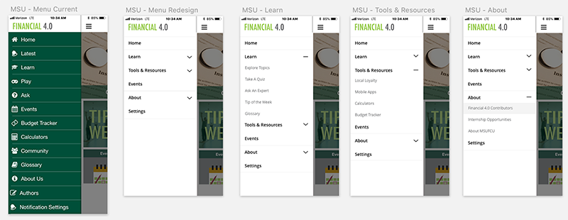
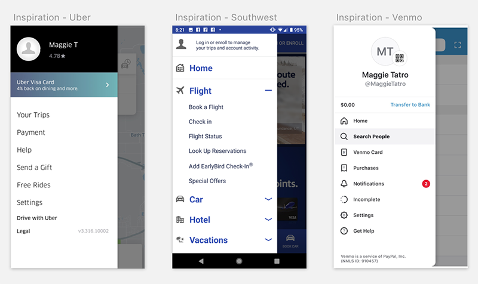
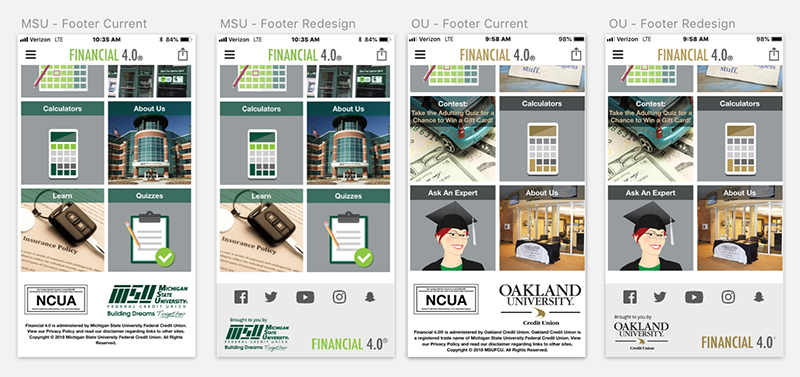
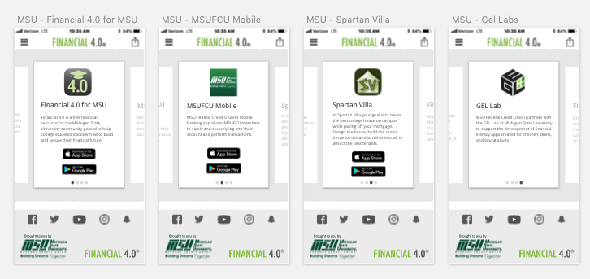
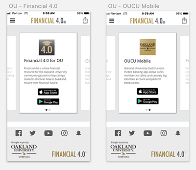
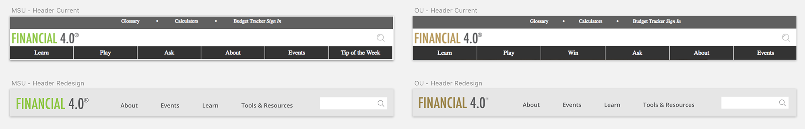
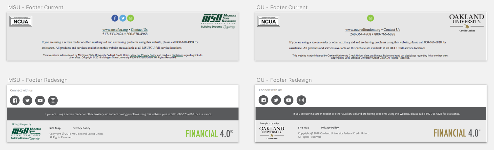
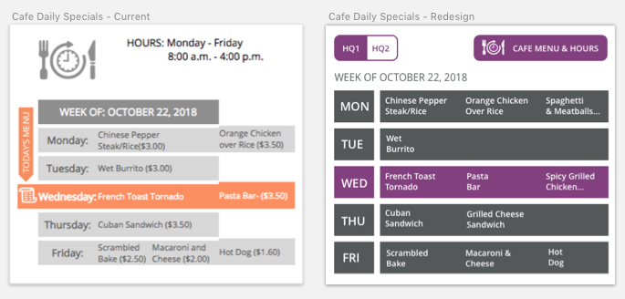
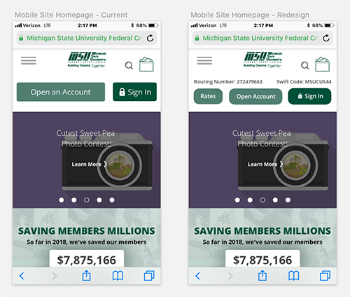
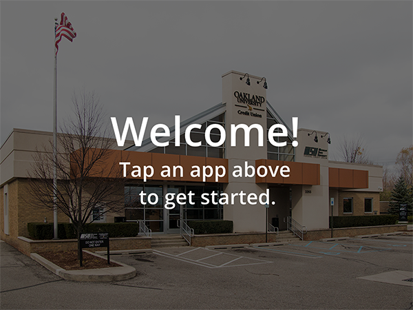

MSUFCU
MSUFCU is the largest university-based credit union in the world in membership and asset size and is the official financial services partner of Oakland University.
As a UX Designer at MSUFCU, I work on projects that impact employees, members, and the public.
I’m fortunate to have a career that plays to my technical and soft skills and to work in an environment that encourages exploration and growth.
Some of my current and past projects are not included here due to non-disclosure agreements.
Tools: Sketch, UXPin, JIRA, Confluence, Adobe Creative Suite, Getty Images











